Current sections first (desktop, 1440 wide), then each option. Read the mockups for background, texture and art only; the copy is today's. Click any image to open it full size.
Picked 2026-10-28: Pro B (with A's dark paper and torn edges) and Download B. Captures of the real site, 1440 wide.
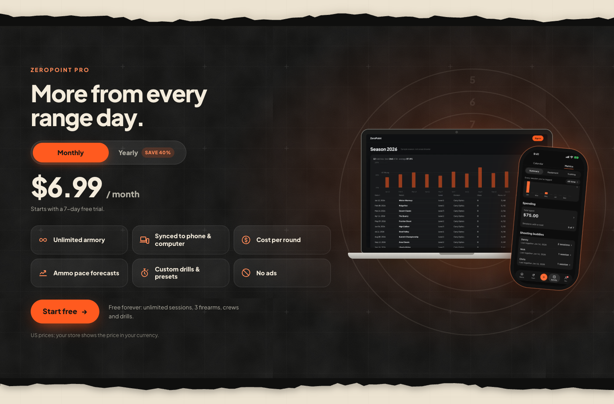
Pro — dark range paper, target, laptop + phone approvedPaper tone and the page grid in charcoal, numbered target rings, the web app on a laptop behind the phone.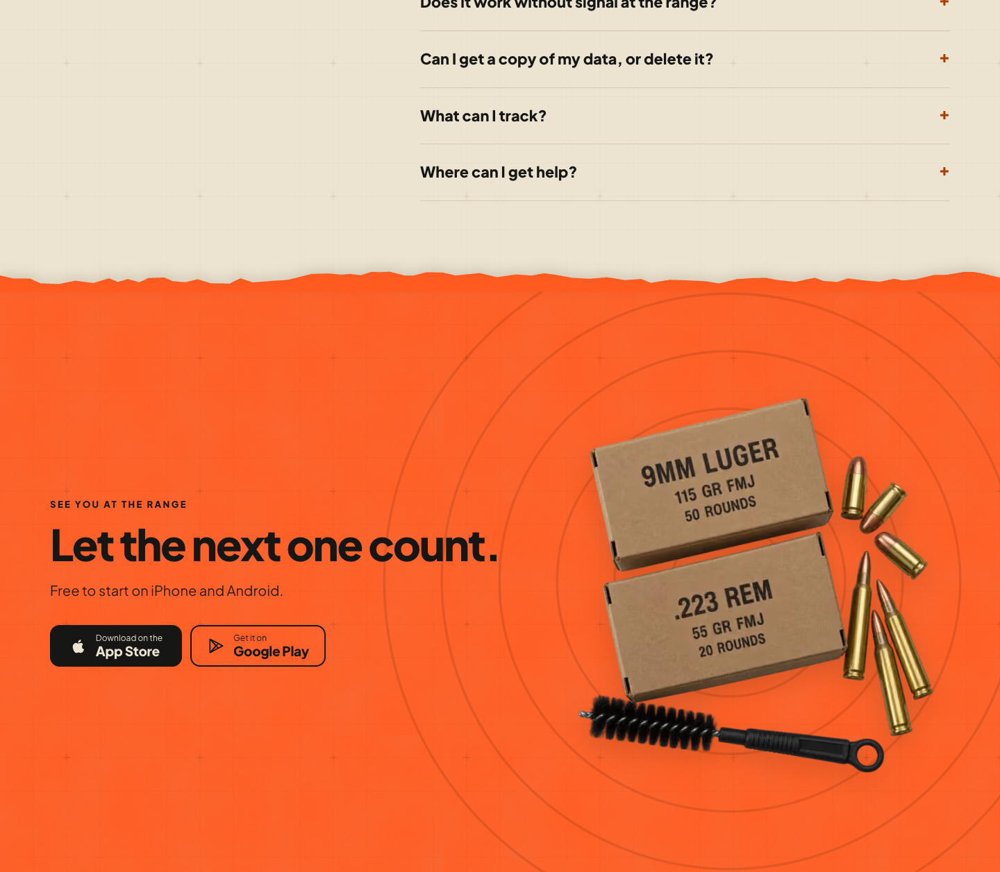
Download — torn edge, orange cardstock, rings approvedTorn off the cream FAQ, grain and a rust grid on the orange, target rings clipped to the band.The Pro section is flat near-black with a glow, and its art shows only the phone even though Pro now includes the log on a computer.
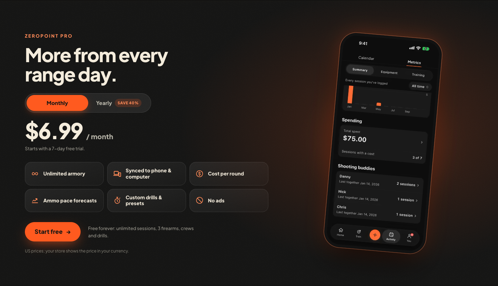
TodayFlat dark with an orange glow; phone only. (Already has the new "Synced to phone & computer" tile.)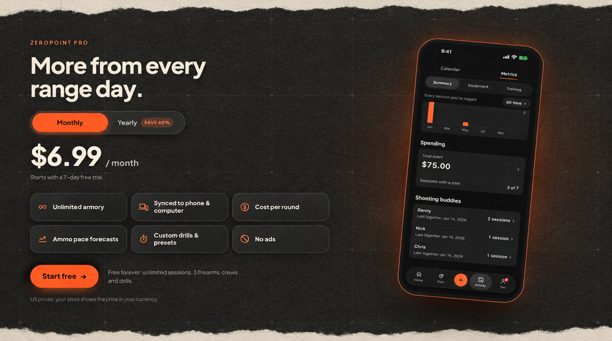
A — Dark range paper, torn edgesBlack cardstock with the cream sections' grid printed in charcoal, torn top and bottom. Same art.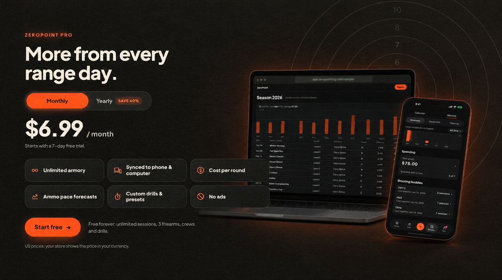
B — Target backdrop, laptop + phone recommendedShows the log on a computer and a phone; faint target rings echo the hero. Build it with A's paper and torn edges, and keep the laptop clear of the tiles.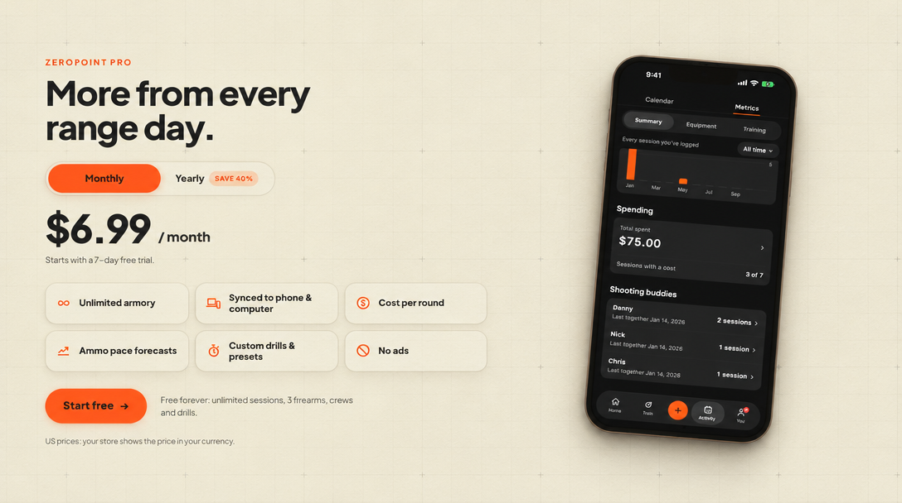
C — Cream paperMatches the paper sections exactly, but the page loses its one dark stage before the final CTA.Today the cream FAQ cuts straight into flat, untextured orange, while every other seam is torn paper.
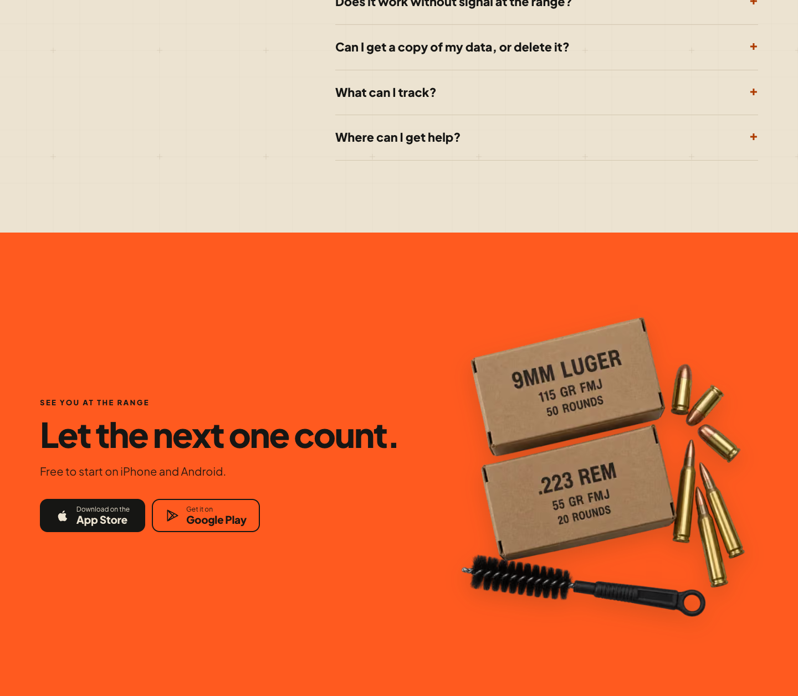
TodayHard straight cut, flat bright orange, content sits low with empty space above.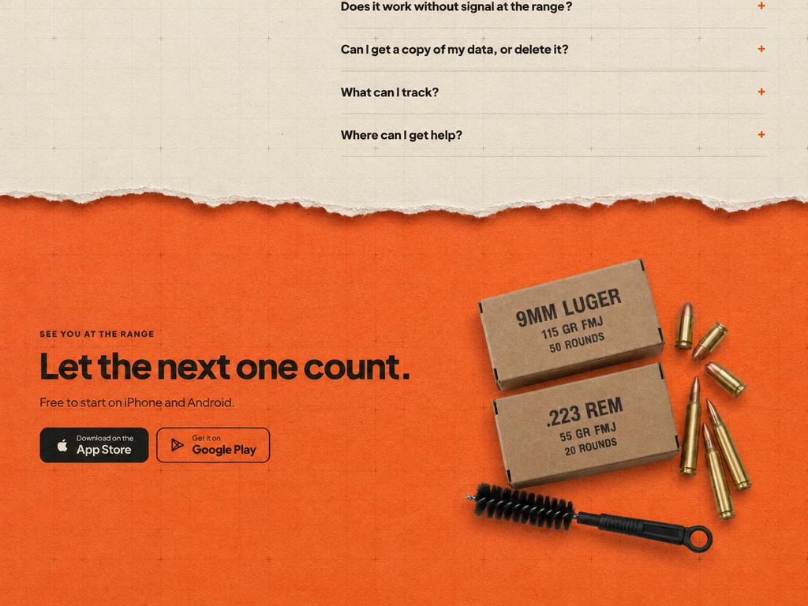
A — Torn edge, orange cardstockTorn seam like the rest of the site, paper grain and a darker-orange range grid. Safe and consistent.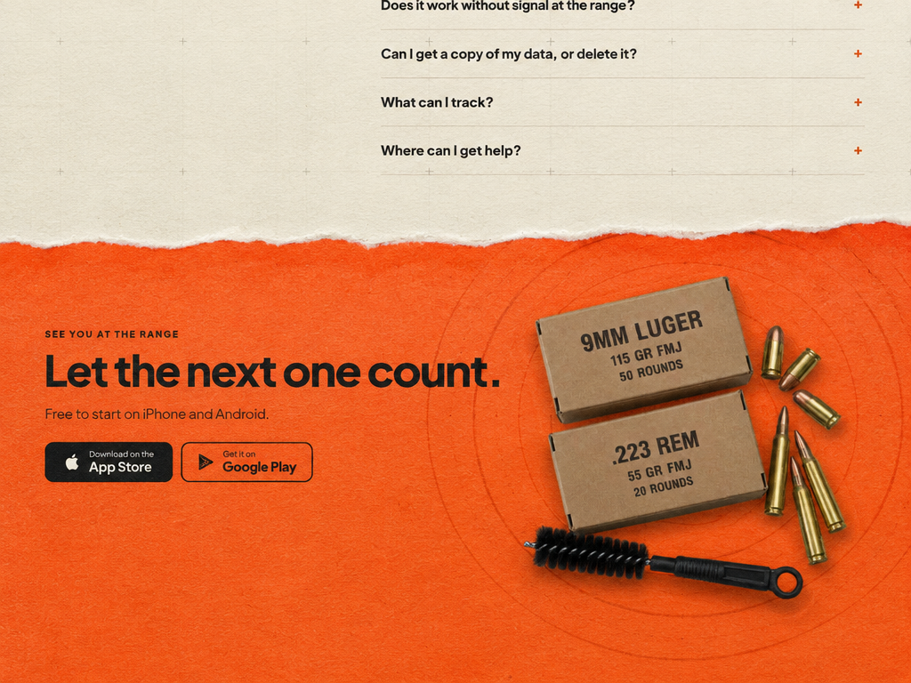
B — Torn edge, target rings recommendedA's torn seam and grain, plus faint target rings behind the ammo that bookend the hero's rings; text block lifted level with the art.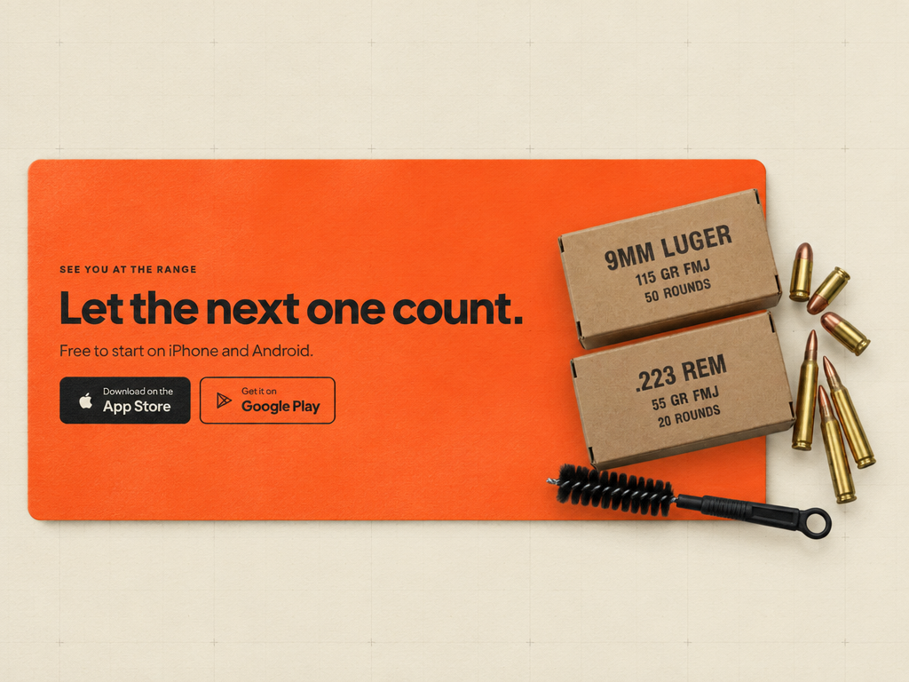
C — Orange card on creamSoftest handoff: the page stays cream and the CTA becomes a card. Loses the big full-width finish.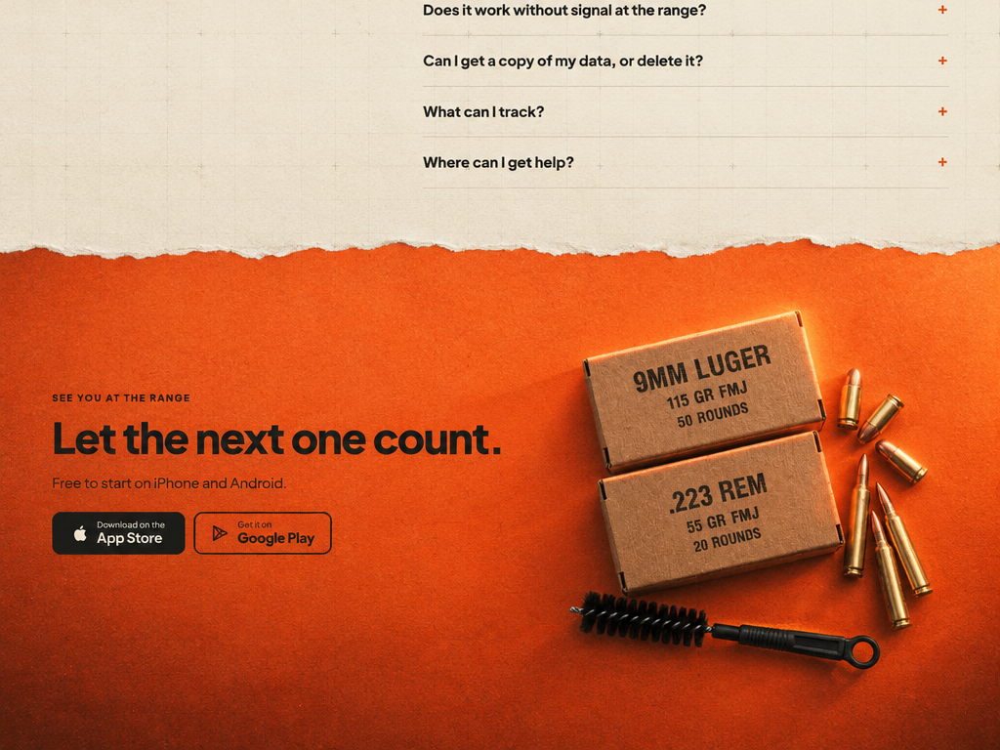
D — Burnt gradientTorn seam, orange deepening to rust with a warm light on the ammo. Moodiest; darker bottom leads into the footer.